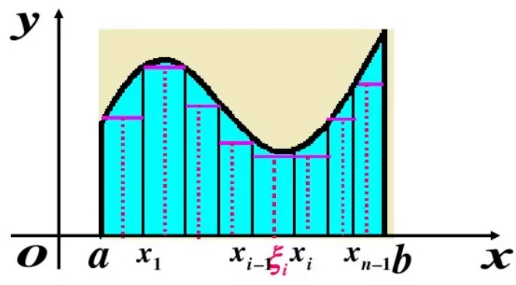
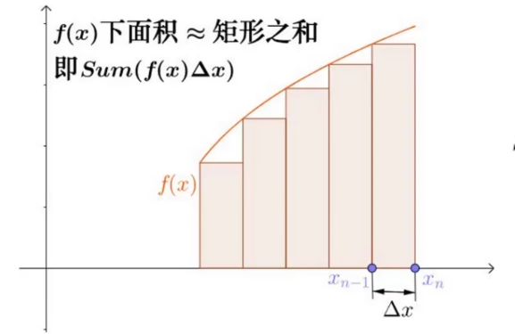
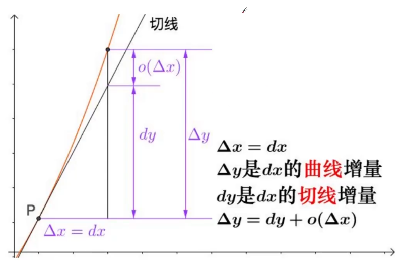
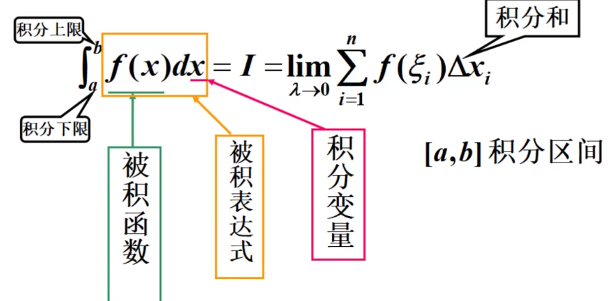
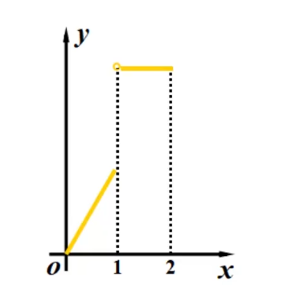

0 引言
0.1 起源
微积分诞生于17世纪，主要帮助人们解决各种速度，面积等实际问题
0.2 基本思想
- 以直代曲，对于矩形，我们可以轻松求得其面积，能否用矩形代替曲线形状呢？
- 应该用多少个矩形来代替呢？
1 微积分的解释
1.1 面积由来
- 在区间 $[a,b]$ 之间插入若干个点，这样就得到了 $n$ 个小区间
- 每一个小矩形面积为:$A_i=f(\xi_i)\Delta x_i$,近似得到曲线面积：$A\approx \sum_{i=1}^n f(\xi_i)\Delta x_i$
- 当分割无限加细，每个小区间的最大长度为$\lambda$，此时$\lambda \to 0$
- 曲边面积：$A=\lim_{\lambda \to 0}\sum_{i=1}^n f(\xi_i) \Delta x_i$

1.2 从求和出发
- 尽可能的将每一个矩形的底边无穷小
- 莱布尼兹为了体现求和的感觉，给S拉长了，简写成$\int_{a}^{b} f(x)\,dx$

即：把 Sum 的首字母 S 拉长成 $\int$，求和号就变成了积分号。
1.3 切线的解释
- 切线的斜率是什么？
例子：$dy,dx$组成的微分直角三角形，其斜边就是切线，切线的斜率即为导数，所以$f'(x)=\frac{dy}{dx}$，所以$dy=f'(x)dx$ - 由于无穷小的概念，dx，dy都叫做微分，所谓微积分就是把这些微分积起来。
1.4 微分

$$\lim_{\Delta x \to 0}dy=0,\lim_{\Delta x \to 0}dx=0$$
2 定积分
2.1 定义
当$\| \Delta x \| \to 0$时，总和S总是趋于确定的极限$I$，则称极限 $I$ 为函数 $f(x)$ 在区间 $[a,b]$ 上的定积分

2.2 性质
- 定积分的值只与被积函数和积分区间 $[a,b]$ 有关，与积分变量的字母无关。
$$ \int_a^bf(x)dx=\int_a^bf(t)dt=\int_a^bf(u)du $$ - 当函数$f(x)$在区间$[a,b]$上的定积分存在的时候，称$f(x)$在区间$[a,b]$上可积
- 充分条件：闭区间上连续的函数一定可积；有有限个第一类间断点的有界函数也可积
2.3 利用定义计算定积分
例子： 计算定积分$\int_0^1x^2dx$
将 $[0,1]$ $n$ 等分，分点为 $x_i=\frac{i}{n}\ (i=1,2,…,n)$；小区间 $[x_{i-1},x_i]$ 的长度 $\Delta x_i = \frac{1}{n}$；取 $\xi_i=x_i$。
$$ \sum_{i=1}^nf(\xi_i)\Delta x_i=\sum_{i=1}^n\xi_i^2\Delta x_i=\sum_{i=1}^nx_i^2\Delta x_i =\sum_{i=1}^n\left(\frac{i}{n}\right)^2 \cdot \frac{1}{n^3} =\frac{1}{n^3}\sum_{i=1}^ni^2=\frac{1}{n^3} \cdot \frac{n(n+1)(2n+1)}{6} $$
$$ =\frac{1}{6}\left(1+\frac{1}{n}\right)\left(2+\frac{1}{n}\right) $$
由 $\| \Delta x \| \to 0 \Rightarrow n \to \infty$：
$$ \int_0^1x^2dx=\lim_{\lambda \to 0}\sum_{i=1}^n\xi_i^2\Delta x_i =\lim_{n \to \infty}\frac{1}{6}\left(1+\frac{1}{n}\right)\left(2+\frac{1}{n}\right)=\frac{1}{3} $$
3 定积分的性质
3.1 基本性质
线性性质：
$$\int_a^b \bigl[f(x)\pm g(x)\bigr]\,dx = \int_a^b f(x)\,dx \pm \int_a^b g(x)\,dx$$
$$\int_a^b k f(x)\,dx = k\int_a^b f(x)\,dx \qquad (k \text{ 为常数})$$
区间可加性（假设 $a<c<b$）：
$$\int_a^b f(x)\,dx = \int_a^c f(x)\,dx + \int_c^b f(x)\,dx$$
保号性：如果在区间 $[a,b]$ 上 $f(x)\ge 0$，则
$$\int_a^b f(x)\,dx \ge 0 \qquad (a<b)$$
3.2 第一中值定理
如果函数$f(x)$在闭区间$[a,b]$上连续，则在积分区间$[a,b]$上至少存在一个点$\xi$，使$\int_a^bf(x)dx=f(\xi)(b-a) \ \ \ (a \le \xi \le b)$

3.3 积分上限函数
- 函数$f(x)$在区间$[a,b]$上连续，对于定积分$\int_a^xf(x)dx$每一个取值的x都有一个对应的定积分值
- 记作：$\Phi(x)=\int_a^xf(t)dt$
- 如果$f(x)$在区间$[a,b]$上连续，则积分上限函数就是$f(x)$在$[a,b]$上的原函数
- 写成导数形式（微积分第一基本定理）：$\Phi'(x)=f(x)$
- 直观理解：$\Phi(x)$ 是「从 $a$ 积到 $x$」的面积，$x$ 再往右挪一点点，新增的那一窄条面积约等于 $f(x)\,dx$，所以增长速率就是 $f(x)$
4 牛顿——莱布尼茨公式
4.1 定义
- 如果$F(x)$是连续函数$f(x)$在区间$[a,b]$上的一个原函数则：
$$ \int_a^bf(x)dx=F(b)-F(a) $$ - 解释：一个连续函数在区间$[a,b]$上的定积分等于它的任意一个原函数在区间$[a,b]$上的增量
4.2 几何解释

可得：$$
F(b)-F(a)=\sum dy
$$
由于 $dy=f'(x)dx$：
$$ f(b)-f(a)=\sum f'(x)dx = \int_a^b f'(x)dx $$
4.3 计算
例：$$\int_0^\frac{\pi}{2}(2\cos x+\sin x-1)dx$$
第一题：
$$\text{原式}=\left[2\sin x -\cos x -x\right]_0^{\frac{\pi}{2}}=3-\frac{\pi}{2}$$
第二题：设 $f(x)=\begin{cases}2x &0 \le x \le 1, \\ 5 &1 < x \le 2\end{cases}$，求 $\int_0^2f(x)dx$。
在 $[1,2]$ 上规定当 $x=1$ 时 $f(x)=5$：
$$\text{原式}=\int_0^12xdx+\int_1^25dx=1+5=6$$

4.4 微积分基本公式
$$ \text{有 } f(x) \in C[a,b], \text{ 且 } F'(x) = f(x) $$
$$ \int_a^b f(x)\,\mathrm{d}x = \underbrace{f(\xi)(b-a)}_{\color{#FFC107}{\text{积分中值定理}}} = \underbrace{F'(\xi)(b-a)}_{\color{#FFC107}{\text{拉格朗日中值定理}}} = F(b) - F(a) $$
例：计算由曲线$y^2=2x$和直线$y=x-4$所围成的图形的面积
解：先求两曲线的交点：
$$ \begin{cases}y^2=2x \\ y=x-4 \end{cases} \Rightarrow (2,-2),\ (8,4) $$
选 $y$ 为积分变量，$y \in [-2,4]$：
$$
dA=\left(y+4-\frac{y^2}{2}\right)dy,\qquad A=\int_{-2}^4dA=18
$$

5 与 d2l 的联系
这一篇的微分部分，是深度学习的主线；积分部分用得少，但要认得。
| 概念 | 在 d2l 里 |
|---|---|
| 导数 | 梯度、反向传播（B04、B11） |
| 梯度 | 梯度下降的方向（B06、B25） |
| 积分（概率） | 连续分布的 $P(a<X<b)=\int_a^b p(x)\,\mathrm{d}x$ |
| 积分（期望） | $\mathbb{E}[X]=\int x\,p(x)\,\mathrm{d}x$ |
一句话串起来
- 微分回答「变多快」：导数 → 梯度 → 反向传播 → 参数更新
- 积分回答「总共多少」：面积 → 累积量 → 概率与期望
- 基本定理把两者连起来：积分是求导的逆运算
6 例题详解
四个计算例子，逐步拆开，每步说明为什么这么变。
6.1 用定义算 $\int_0^1 x^2\,\mathrm{d}x$
思路：不用公式，直接从「面积 = 小矩形之和」出发，看极限。
第 1 步：分割
把 $[0,1]$ 等分成 $n$ 份，分点 $x_i=\dfrac{i}{n}$（$i=0,1,\dots,n$）。
区间长度是 1，$n$ 等分后每份长 $1/n$，第 $i$ 个分点就在 $i/n$ 处。每小段长 $\Delta x_i=1/n$。
第 2 步：取点
每小段上任取一点 $\xi_i$，这里取右端点 $\xi_i=x_i=i/n$。
可以任取，是因为定积分定义要求「任意取点，极限都相同」。取右端点只是算起来整齐。
第 3 步：求小矩形面积和
$$\sum_{i=1}^n f(\xi_i)\Delta x_i=\sum_{i=1}^n\left(\frac{i}{n}\right)^2\cdot\frac{1}{n}$$
高 $f(\xi_i)=\xi_i^2=(i/n)^2$，乘底 $1/n$ 即一个小矩形面积。
第 4 步：化简
$$\left(\frac{i}{n}\right)^2\cdot\frac{1}{n}=\frac{i^2}{n^3}\quad\Rightarrow\quad \text{和}=\frac{1}{n^3}\sum_{i=1}^n i^2$$
第 5 步：代入平方和公式
$$\sum_{i=1}^n i^2=\frac{n(n+1)(2n+1)}{6}$$
这是关键变换：把求和换成 $n$ 的表达式，才能取极限。
第 6 步：整理
$$\frac{1}{n^3}\cdot\frac{n(n+1)(2n+1)}{6}=\frac{(n+1)(2n+1)}{6n^2}=\frac{1}{6}\left(1+\frac{1}{n}\right)\left(2+\frac{1}{n}\right)$$
分子分母各提一个 $n$：$\frac{n+1}{n}=1+\frac1n$，$\frac{2n+1}{n}=2+\frac1n$。
第 7 步：取极限
$n\to\infty$ 时 $1/n\to0$：
$$\frac{1}{6}(1+0)(2+0)=\frac{1}{3}$$
核对：牛顿–莱布尼茨 $\int_0^1x^2dx=\frac{x^3}{3}\Big|_0^1=\frac13$，一致。
6.2 $\int_0^{\pi/2}(2\cos x+\sin x-1)\,\mathrm{d}x$
第 1 步：逐项找原函数
| 被积函数 | 原函数 | 依据 |
|---|---|---|
| $2\cos x$ | $2\sin x$ | $(\sin x)'=\cos x$ |
| $\sin x$ | $-\cos x$ | $(-\cos x)'=\sin x$ |
| $-1$ | $-x$ | $(-x)'=-1$ |
原函数：$2\sin x-\cos x-x$。
第 2 步：代入上限 $\pi/2$
$$2\sin\frac{\pi}{2}-\cos\frac{\pi}{2}-\frac{\pi}{2}=2\cdot1-0-\frac{\pi}{2}=2-\frac{\pi}{2}$$
第 3 步：代入下限 $0$
$$2\sin0-\cos0-0=0-1-0=-1$$
第 4 步：上限减下限
$$\left(2-\frac{\pi}{2}\right)-(-1)=3-\frac{\pi}{2}$$
易错：下限代入要减去整个值，这里减的是 $-1$，所以变 $+1$。
6.3 分段函数 $\int_0^2f(x)\,\mathrm{d}x$
$f(x)=2x$（$0\le x\le1$）、$f(x)=5$（$1<x\le2$）。
第 1 步：按分界点拆区间
$$\int_0^2=\int_0^1+\int_1^2$$
第 2 步：各用各的表达式
$$\int_0^1 2x\,\mathrm{d}x=\left[x^2\right]_0^1=1-0=1$$
$$\int_1^2 5\,\mathrm{d}x=5\cdot(2-1)=5$$
常数函数积分 = 常数 × 区间长度。
第 3 步：相加
$$1+5=6$$
关于 $x=1$：单点的函数值不影响积分（面积为 0），归哪一段都行。
6.4 $y^2=2x$ 与 $y=x-4$ 围成的面积
第 1 步：求交点
把 $x=y+4$ 代入 $y^2=2x$：
$$y^2=2(y+4)=2y+8\quad\Rightarrow\quad y^2-2y-8=0\quad\Rightarrow\quad (y-4)(y+2)=0$$
$y=4$ 或 $y=-2$，对应交点 $(8,4)$、$(2,-2)$。积分区间由交点决定。
第 2 步：选 $y$ 为积分变量，$y\in[-2,4]$。
为什么选 $y$：对 $x$ 积分时右边要「换线」（抛物线一段 + 直线一段），必须拆；对 $y$ 积分时右边界恒为直线 $x=y+4$，左边界恒为抛物线 $x=y^2/2$，一个式子够用。
第 3 步：面积元（右减左）
$$\mathrm{d}A=\left[(y+4)-\frac{y^2}{2}\right]\mathrm{d}y$$
高度 $y$ 处：右边 $x=y+4$，左边 $x=y^2/2$，横坐标之差就是窄条宽度。
第 4 步：积分
$$A=\int_{-2}^{4}\left(y+4-\frac{y^2}{2}\right)\mathrm{d}y$$
第 5 步：找原函数
| 项 | 原函数 |
|---|---|
| $y$ | $y^2/2$ |
| $4$ | $4y$ |
| $-y^2/2$ | $-y^3/6$ |
第 6 步：代入上限 $y=4$
$$\frac{16}{2}+16-\frac{64}{6}\approx 13.333$$
第 7 步：代入下限 $y=-2$
$$\frac{4}{2}-8-\frac{(-2)^3}{6}=2-8+\frac{8}{6}\approx -4.667$$
第 8 步：相减
$$13.333-(-4.667)=18$$
易错：下限的 $y^3/6$ 项，$(-2)^3=-8$，前面有负号，所以是 $-\frac{-8}{6}=+\frac{8}{6}$，符号容易错。
6.5 四个例子的共同套路
| 例 | 方法 | 关键变换 |
|---|---|---|
| 6.1 | 定义法 | 求和 → 平方和公式 → 取极限 |
| 6.2 | 牛–莱公式 | 逐项找原函数 → 上下限相减 |
| 6.3 | 拆区间 | 分界点处拆开，各用各的表达式 |
| 6.4 | 面积 | 求交点定区间 → 选积分变量 → 右减左 |
如果您喜欢此博客或发现它对您有用，则欢迎对此发表评论。 也欢迎您共享此博客，以便更多人可以参与。 如果博客中使用的图像侵犯了您的版权，请与作者联系以将其删除。 谢谢 ！